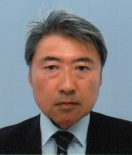

Hideshi Ooka (Team Leader)
Hi, and welcome to the website of the Mathematical Catalysis Research Team at National Institute for Materials Science (NIMS), Japan. Our research focuses on making new catalysts using microkinetics to guide our experiments. The main target application is electrocatalysts used for green hydrogen production using water electrolysis, but we are also still maintaining strong connections with people working in enzyme catalysis.
After starting out as an experimental spectroelectrochemist, I taught myself Python, which I now use for data analysis, numerical simulations and machine learning, as well as dynamical systems analysis, chemical reaction network theory, and other branches of applied mathematics. Technological advancement nowadays is becoming faster and faster, and it is impossible to survive without constantly updating our skillset. That is why constant evolution is the biggest core value in this group.
Learning something new has always given me new vantage points from which to ask questions, and I believe the freedom to do so is one of the greatest joys of being a scientist. Details of my CV can be found at my personal homepage.
The Team
-
Koichi Yatsuzuka
Postdoc
Research Target: Developing electrochemical methods to identify rate constants and the kinetic mechanism of electrocatalysts.
-

Sahaya Vijay Jeyaraj
Postdoc
Research Target: Identifying analytical formula on the kinetics of chemical reaction networks.
-

Hiromi Takahashi
Engineer
Research Target: Identifying the kinetic mechanism using optical waveguide (OWG) spectroscopy and gradient-incidence X-Ray diffraction (GI-XRD).
-
Chifumi Nishimoto
Assistant
Role: Managing the lab and handling admin procedures.